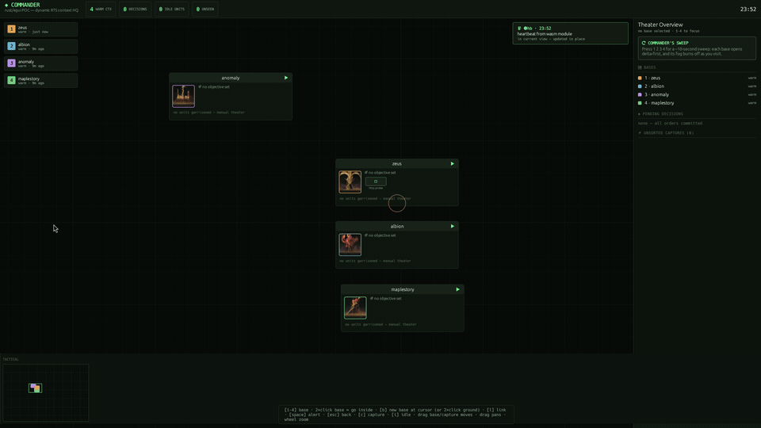

Each building on the map represents a project, goal, or cluster of context. Borrowing the central lesson from SpacetimeDB — ship the logic to where the state lives, as sandboxed wasm modules invoked by the host — every building can now install and run wasm programs: small sandboxed modules that poll for signals, reduce building state, and query http/https endpoints, each under an explicit budget.
space.jsonl, resume automatically on startup, and hot-reload when their file
changes on disk — an AI agent (or you) can rewrite a program while the commander is running and the
new version is live on its next tick.

Workflow: select a base → programs tick on the card → heartbeat.wat rewritten on disk hotloads (signal text + status change) → the fuel-trapped runaway program is paused over the control API.
1. Model — what a program is
2. Lifecycle & scheduling
3. Guest ABI reference
4. Reducer commands
5. Budgets
6. HTTP access
7. Control API
8. AI agents & hotloading
9. Sample programs
10. Source map
A program is a .wasm or .wat file (wat is compiled on load) that exports:
(memory (export "memory") ...) ;; linear memory the host reads/writes
(func (export "tick") (result i32) ...) ;; called on the program's interval; 0 = ok
Its installation record lives on the building (Project.modules in
src/model.rs):
{ "name": "probe", // unique per building
"path": "mods/http_probe.wat",// relative to the commander working dir
"interval_sec": 15.0, // min seconds between ticks (default 60)
"fuel_per_tick": 50000000, // wasm fuel budget per tick (default 50M)
"max_http_per_tick": 4, // http requests per tick (default 4)
"max_http_resp_kib": 256, // response body cap, KiB (default 256)
"enabled": true }
The host (src/wasm.rs) runs all programs on a dedicated thread with a wasmtime engine
(consume_fuel on). The app thread pushes a snapshot of every building — name, full
state JSON, module configs — about once per second; the runtime reconciles:
| event | behavior |
|---|---|
| program installed / building placed | compile + instantiate, first tick immediately |
| program removed / building destroyed | instance dropped |
| config changed (budgets, path, interval) | instance rebuilt with the new config |
| module file mtime changed | hot reload — recompiled and reinstantiated (~200 ms poll) |
| compile/instantiate failure | reported once as a FAULT; retried only when the file or config changes |
disabled (enabled: false) | instance dropped; re-enabling rebuilds it fresh |
Each due tick: the program's host context gets the latest building state JSON, its http counter and
scratch reset, its fuel tank refilled to fuel_per_tick, then tick() runs.
Outputs (signals, reducer commands, logs, and a run report with fuel/http/ms spent) flow back to the
app thread, which applies them to the world — signals enter the building's event feed exactly like
agent reports (pings, toasts, "since you left" deltas), reducers mutate state, and everything
autosaves to space.jsonl.
All imports are under the module name "commander". Strings are (ptr, len) pairs into the guest's exported memory, UTF-8.
| import | signature | meaning |
|---|---|---|
log | (ptr, len) | debug line → stderr + the card's log: row |
signal | (ptr, len) | emit an event into the building's feed (ping + toast + delta) |
reduce | (ptr, len) | JSON reducer command applied to building state (§4) |
state | () → i64 | load the building's state JSON into the host scratch; returns its length |
http | (mp, ml, up, ul, bp, bl) → i64 | perform METHOD url [body]; scratch = response body; returns length, -1 error, -2 http budget spent |
read | (ptr, cap) → i32 | copy the scratch (state or http response) into guest memory; returns bytes copied |
The scratch is a per-instance host buffer: state/http fill it and
return the length; the guest then calls read with a buffer of its choosing. A short
buffer simply truncates — no second fetch happens.
The building state JSON handed to state is the full serialized project:
{"name":"zeus","status":"wasm-ok","goal":"","agents":[...],"tasks":[...],
"modules":[...],"pos":[...], ...}
A reducer is a JSON object passed to reduce. It is applied transactionally on the app
thread (never mid-frame, never racing the UI) and marks the space dirty for autosave. Unknown ops
are logged and ignored.
| op | fields | effect |
|---|---|---|
status | value | set the building's status line |
goal | value | set the building's objective |
task | title, state, x?, y?, notes? | upsert a task (a goal pylon in the world); state ∈ todo · doing · done · blocked; x/y set its world anchor; notes replaces the pylon's brief (title is only its name) |
task_remove | title | remove a task (its pylon warps out) |
question | text, resolved?, x?, y?, notes? | upsert a question (a sensor array in the world); omit resolved to leave it as-is on update; notes replaces its brief |
question_remove | text | remove a question |
agent | id, state?, task?, blocked_on? | upsert a unit; state ∈ working · blocked · idle; stamps last_report |
agent_remove | id | remove a unit |
Every budget is enforced per tick, per program — one program can never starve the others or the UI:
| budget | mechanism | on exhaustion |
|---|---|---|
| compute | wasmtime fuel metering (fuel_per_tick) | tick traps — card shows FAULT · trap: all fuel consumed by WebAssembly; next tick gets a fresh tank |
| http calls | counter (max_http_per_tick) | http returns -2 |
| http body | read cap (max_http_resp_kib) | body truncated at the cap |
| cadence | interval_sec (min 1s) | tick simply isn't scheduled yet |
| output flood | 64 signals/reducers/logs per tick | excess dropped |
| wall clock | 10 s timeout per http request | request fails (-1) |
The card shows spend next to budget after every run:
budget: 15s · 50M fuel · 2 http · last: 153.4ms, 0M fuel, 1 http.
Programs may query http:// and https:// endpoints (anything else is
rejected with -1). Requests run blocking on the wasm thread via ureq;
non-2xx responses still return their body — the program decides what a 404 means. Any method is
allowed; an empty method string defaults to GET; a non-empty body is sent as the
request body.
Programs are managed at runtime over the existing control server (COMMANDER_HTTP, default 127.0.0.1:7700):
# install a program into base 0
curl "localhost:7700/module_add?i=0&name=probe&path=mods/http_probe.wat\
&interval=15&fuel=50000000&http=2&http_kib=256"
# pause / resume
curl "localhost:7700/module_toggle?i=0&name=probe"
# uninstall
curl "localhost:7700/module_rm?i=0&name=probe"
# observe: per-module ticks, fuel/http spend, ms, last error
curl localhost:7700/state | jq '.projects[0].modules'
The card offers the same controls per program: ⏸/▶ pause–resume and ✕
uninstall, plus live status (N TICKS · PAUSED ·
FAULT), budgets vs. actual spend, last log line, and last error.
Yes — agents can hotload programs on a running commander, two ways:
File watch. The runtime tracks each program file's mtime. An agent that rewrites
mods/foo.wat (or drops in a freshly compiled .wasm) gets the new version
compiled, instantiated, and ticking within ~200 ms — no restart, no reinstall, and the
building's state is untouched. This is the loop the GIF above shows.
Control API. /module_add · /module_rm · /module_toggle
let an agent install new capabilities into any building, swap implementations by uninstalling and
reinstalling under a different path, or pause a misbehaving program — and /state closes
the loop by exposing every program's tick count, spend, and last error for the agent to read back.
state.
That is the spacetimedb lesson applied: the module is pure logic, the building owns the data.
commander/mods/)Smallest useful program: reads building state, logs a prefix, emits a signal, reduces status.
(module
(import "commander" "signal" (func $signal (param i32 i32)))
(import "commander" "reduce" (func $reduce (param i32 i32)))
(memory (export "memory") 1)
(data (i32.const 16) "heartbeat v2 hotloaded")
(data (i32.const 64) "{\"op\":\"status\",\"value\":\"wasm-v2\"}")
(func (export "tick") (result i32)
(call $signal (i32.const 16) (i32.const 22))
(call $reduce (i32.const 64) (i32.const 33))
(i32.const 0)))Polls an https endpoint; reduces the http probe task to done or blocked and signals the result.
Spins forever — exists to demonstrate the fuel budget trapping a tick while the rest of the base keeps running.
Anything that compiles to wasm works the same — Rust via cargo build --target wasm32-unknown-unknown
with extern "C" imports matching §3, C via clang, or hand-written wat as above.
| file | role |
|---|---|
commander/src/wasm.rs | module host: engine, ABI imports, scheduler, budgets, hot reload |
commander/src/model.rs | ModuleCfg, Project.modules |
commander/src/app.rs | output pump (wasm_pump), reducer application (apply_wasm_reduce), snapshot sync (wasm_sync), card UI, control commands |
commander/src/ctrl.rs | /module_add · /module_rm · /module_toggle endpoints |
commander/mods/ | sample programs |